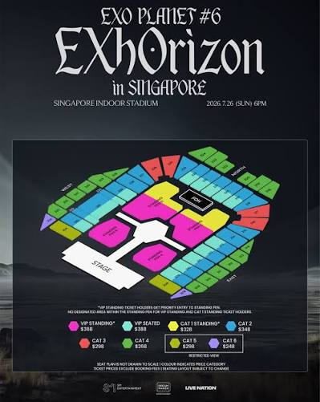
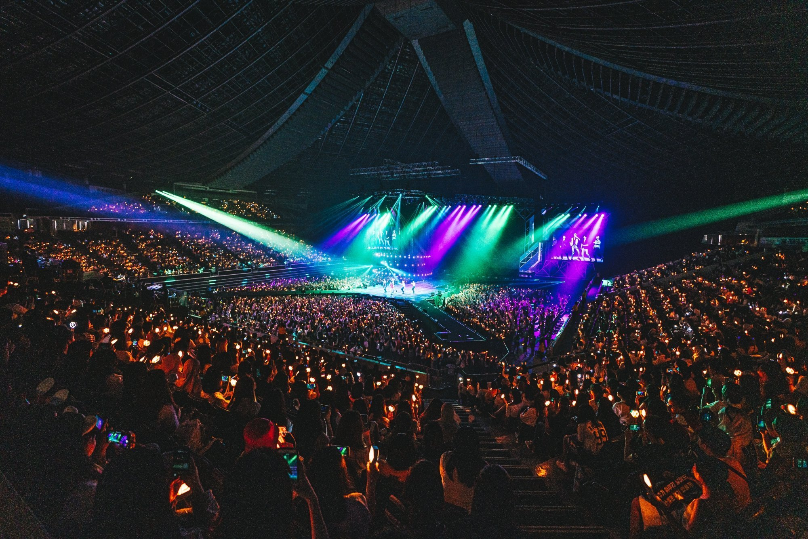

× THE MAP BEHIND THE MODEL
EXO PLANET #6 · EXhOrizon. This model uses your newest supplied Singapore seating plan, dated 26 July 2026, 6pm. It shows the central stage hub, lateral runways, VIP standing, VIP seated and CAT 1 standing colour groups.
The source image is low resolution. The model adapts its main stage and category arrangement; section dimensions, floor zone boundaries and seat positions are approximate. The 3D arena adds illustrative LED walls, side screens, speaker arrays, lighting trusses and crowd barriers; their sizes and placement are not measured from the concert production design. The extended stage is a single connected deck with a chamfered central platform, cleaned angled runways, continuous outer fascia/trim and clipped deck-panel joints. Its footprint follows the concert seating reference, with detailing inspired by the supplied photographs; other productions shown in those photos are not copied as verified EXhOrizon geometry. The expanded stage model includes a panoramic three-bank LED backdrop labelled EXO HORIZON #6, framed screen cabinets, stepped performer risers, monitor wedges, footlights, fly bars, suspension drops and a four-faced overhead display, based on the supplied stage photographs. These details are illustrative and are not a verified production or rigging plan. Stair aisles, handrails, front guardrails, exposed roof steel and the dark stage finish are informed by the supplied venue photographs; their exact positions and sightline effects are not verified. Rear and CAT 1 standing-area names are descriptive rather than verified ticket labels. Level 2 uses the visible 200-series terrace sections; Level 3 uses the visible 300-series balcony sections. Sections behind the stage or absent from this concert plan are not invented.
The 3D arena uses muted ticket-category tints matched to the seating plan, including mint VIP seated bands. These are navigation overlays, not actual chair colours; the position preview retains warm venue-style chairs. The seating plan shows illustrative individual chairs arranged in clipped rows, clear stair aisles and tier-front railings, with section badges and category colours following the supplied EXhOrizon map. Chair symbols do not represent verified row counts, seat counts or ticket numbering. The section map is not to scale. Arena floor, outer circulation surfaces, seating support bases and plan-view stair/guardrail details provide architectural context; their extents and routes are estimated rather than surveyed. The immersive preview includes estimated tier heights, row spacing, chairs and illustrative human models with shaped torsos, tapered limbs, facial features, hands and rounded footwear for scale. Audience models vary in height, body shape, skin tone, hairstyle and outfit. Normal mode shows seated spectators and relaxed standing pens. Concert mode has standing spectators, glowing hexagonal lightsticks, some raised phones, gentle weight shifts, restrained shoulder-based waving and occasional small cheers. Motion can be paused and starts paused for reduced-motion preferences. Concert mode also dims house lights, animates five illustrative performers in a simulated stage routine and LED screens, and adds slowly sweeping coloured light beams. Performer hairstyles, facial proportions and black stage outfits are inspired by the supplied five-person poster; they are illustrative models, not verified likenesses. These are not a recording or an exact reconstruction of the actual show, and are not synchronised to the soundtrack video. Your entered height adjusts the camera using an approximate standing eye level (height minus 11 cm) or seated eye level (45 cm seat height plus 46% of standing eye level). Body proportions and actual seat heights vary. These are not measured seat views or verified obstruction predictions. You can enter the section, row and seat printed on your ticket. We preserve those numbers without converting them to simulated row numbers. The reference maps do not contain individual row/seat coordinates, so only the section is located; the pin does not claim to identify the exact chair. The immersive camera uses a representative position within that section. Individual section capacities cannot be determined from the supplied maps; simulated people and chairs are not an official seat inventory.

Latest concert reference supplied by you. Image rights remain with their respective owners. Please consult the original organiser map for event categories and conditions.
Architectural photo references These photos guide architectural details. They are not asserted to show the exact EXhOrizon production.

Lighting mood reference supplied by you. Show effects are simulated.
Music The top-right panel lists all 29 songs from your chosen EXhOrizon playlist, in its retrieved order, matched to individual official YouTube releases. MAMA uses the official MAMA (Rearranged) audio release from EXOLOGY CHAPTER 1 instead of its music video. Playback uses a visible YouTube player with song selection, Play/Pause, Previous/Next and automatic advancement. This is a fan-selected soundtrack, not a verified Singapore setlist. Embedding, regional availability, ads and any sign-in requirements are controlled by YouTube and the uploader. The video is not independently verified as the Singapore setlist.
Singapore Indoor Stadium on Ticketmaster ↗